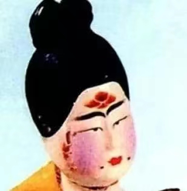
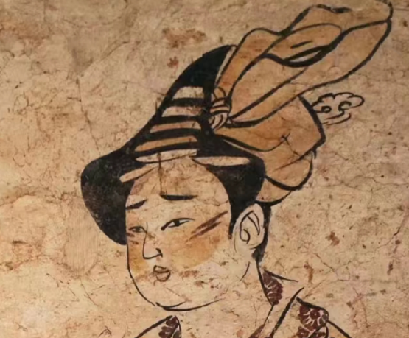

唐代女子好面妆，化妆步骤大概分为以下七个部分：
一敷铅粉;二抹敷脂;三画黛眉;四贴花钿;五点面靥;六描斜红;七涂口脂。
【粉脂】
粉脂是胭脂和素粉的合称，由于唐装多有袒露肌肤，因此要求除面部敷粉以外，胸、臂等裸露部分也要求敷粉。现在可以看到的形象资料是出土的陶俑和壁画仕女图，上面有半圆形和圆形的红粉化妆痕迹。在当时，宫中的女人也有少数只以素粉扑面的化妆方法，并形成了宫中一种不正常现象，人们称它为“泪妆”，认为它属于奇装异服一类。
【画眉】
唐女画眉千奇百态。唐代妇女用青黑色颜料将眉毛画浓，叫做“黛眉”。“黛眉”是汉代以“黛”画眉风气的延续。当时妇女修眉，除剃掉原来的淡眉外，还要刮净额毛，用“黛”画出各种眉毛式样。唐初尚宽与浓，至开元、天宝年间，则尚细淡的画法，又尚细细八字式低颦。后又时尚过蝴蝶眉、八字眉等。到晚唐时化妆趋于怪诞，一时有以悲以怪为美，以病态为美之风尚，总之，唐初、中期的发式与化妆多趋于多样、自然、健康活泼，而晚期则有变态、压抑、愁闷、病态的倾向。
【花钿】
花钿是唐代面部装饰的一大特点。这种在脸部额间贴上花钿进行装饰和点缀的方法，在唐时十分盛行，尤其是唐的后期更为时尚，并且有多种效果，花钿的质地是薄而轻的，色是腻而艳的，样式有鸟、虫、花叶等。这在当时的壁画、绢画上都有反映。
【面靥】
面靥是施于面颊酒窝处的一种妆饰，通常以胭脂点染，也有用金箔、翠羽等物粘贴而成。在盛唐以前，妇女“面靥”一般多作成黄豆大小的圆点 ;盛唐以后，有的形如钱币，被称为“钱点” ;有的如杏核，被称为“杏靥”。也有饰以各种花卉的，俗谓“花靥”。晚唐五代以后，增加了鸟兽图形，有的甚至还将这种花纹贴得满脸皆是。
【斜红】
斜红是妇女面颊上的一种妆饰。从唐代墓葬里出土的女俑，脸部常绘有两道红色的月牙形妆饰，这种妆饰色泽浓艳，形象古怪，有的还被故意描绘成残破状，这种妆饰被称为斜红。
【点唇】
所谓的“点唇”，就是以“唇脂”一类的化妆品涂抹在嘴唇上。我国最早出现的点唇材料，叫“唇脂”，它的主要原料是“丹”。“丹”是一种红色矿物，也叫“朱砂”，用它调和动物脂膏制成的“唇脂”，具有鲜明强烈的色彩光泽。随着社会风气的变迁和审美观念的演变，唐代妇女的“点唇”形式也出现多样的造型。如石榴桥、大红春、小红春、半边娇、万金红等。